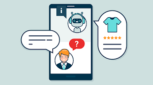

Qu'est-ce qu'un chatbot ?

Un chatbot est un programme de conversation interactif basé sur des techniques logicielles ou d'intelligence artificielle. Il permet à l'utilisateur de communiquer par texte ou voix, d'une manière similaire à une discussion avec un être humain. Il sert d'intermédiaire entre les humains et les systèmes numériques, simplifiant l'accès aux informations et aux services sans passer par une interface classique (formulaires, menus, etc.).
L'évolution des chatbots:
Première génération (basée sur des règles) : apparue dans les années 1960 (exemple : ELIZA), reposait sur des mots-clés et des règles préprogrammées.
Deuxième génération (NLP + règles) : développée au début d'Internet, surtout dans les services clients en ligne.
Troisième génération (IA et apprentissage profond) : comme ChatGPT ou Bard, capables de comprendre profondément le langage naturel et d'apprendre en continu.
Types des chatbots:
Chatbots basés sur des règles
Les chatbots basés sur des règles (rule-based chatbots) sont des systèmes conversationnels qui fonctionnent à partir de moteurs de règles prédéfinies (rule-based engines). Ils utilisent des arbres de décision (decision trees), des expressions régulières (Regex) et des listes de mots-clés pour associer l'entrée de l'utilisateur à une réponse stockée. Leur logique repose sur le principe du matching déterministe : si une condition est remplie (ex. mot-clé détecté), alors une action ou une réponse spécifique est déclenchée. Ils n'ont pas de capacité d'apprentissage automatique (Machine Learning), ce qui les rend efficaces pour des scénarios simples mais limités en compréhension du langage naturel.
Chatbots intelligents (IA)
Ce sont des systèmes de dialogue basés sur l'intelligence artificielle (IA) et le traitement automatique du langage naturel (NLP - Natural Language Processing). Ils utilisent des modèles d'apprentissage automatique (Machine Learning) et parfois des réseaux de neurones profonds (Deep Learning) pour comprendre le sens, le contexte et l'intention de l'utilisateur. Grâce à ces technologies, ils offrent une interaction plus flexible, contextuelle et humaine, contrairement aux chatbots à règles fixes.
Chatbots vocaux (Voice Bots)
Ce sont des agents conversationnels basés sur la reconnaissance vocale. Ils utilisent des technologies telles que la reconnaissance automatique de la parole (ASR - Automatic Speech Recognition) et la synthèse vocale (TTS - Text To Speech), combinées à l'intelligence artificielle (IA) et au traitement du langage naturel (NLP), pour comprendre et répondre aux commandes vocales des utilisateurs. Des exemples connus incluent Google Assistant, Amazon Alexa et Siri.
Chatbots spécialisés
Ce sont des agents conversationnels conçus pour des domaines spécifiques tels que la santé, l'éducation, la finance ou le service client. Ils reposent sur des bases de connaissances spécialisées (Knowledge Bases) et des modèles de traitement du langage naturel (NLP) adaptés à leur contexte métier. Grâce à cette spécialisation, ils offrent des réponses précises, contextualisées et pertinentes selon le domaine d'application.
Avantages principaux:
Inconvénients des chatbots:
Cas d'utilisation pratiques des chatbots:
- Commerce et e-commerce :
- Santé :
- Éducation :
- Services publics :
- Divertissement et interaction sociale :
L'avenir des chatbots:
Un video qui presente le chatbot:
Cette vidéo, générée grâce à l'intelligence artificielle, illustre de manière claire et dynamique le rôle des chatbots dans notre quotidien. Elle présente leurs différentes utilisations du service client à l'éducation et montre comment ils transforment la communication entre les humains et les machines.
L'essentiel à retenir:
Les chatbots représentent aujourd'hui une avancée majeure dans la communication homme-machine. Ils permettent d'automatiser des tâches répétitives, de faciliter l'accès à l'information et d'améliorer l'expérience utilisateur. Cependant, malgré leurs nombreux avantages, ils ne remplacent pas encore totalement l'humain, notamment dans les situations complexes ou émotionnelles. L'avenir des chatbots réside dans l'amélioration de la compréhension contextuelle et émotionnelle grâce à l'intelligence artificielle.